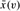

|
|
< Day Day Up > |
|
In this section, we study two techniques that are useful in designing approximation algorithms: randomization and linear programming. We will give a simple randomized algorithm for an optimization version of 3-CNF satisfiability, and then we will use linear programming to help design an approximation algorithm for a weighted version of the vertex-cover problem. This section only scratches the surface of these two powerful techniques. The chapter notes give references for further study of these areas.
Just as there are randomized algorithms that compute exact solutions, there are randomized algorithms that compute approximate solutions. We say that a randomized algorithm for a problem has an approximation ratio of ρ(n) if, for any input of size n, the expected cost C of the solution produced by the randomized algorithm is within a factor of ρ(n) of the cost C* of an optimal solution:
| (35.11) |
We also call a randomized algorithm that achieves an approximation ratio of ρ(n) a randomized ρ(n)-approximation algorithm. In other words, a randomized approximation algorithm is like a deterministic approximation algorithm, except that the approximation ratio is for an expected value.
A particular instance of 3-CNF satisfiability, as defined in Section 34.4, may or may not be satisfiable. In order to be satisfiable, there must be an assignment of the variables so that every clause evaluates to 1. If an instance is not satisfiable, we may want to compute how "close" to satisfiable it is, that is, we may wish to find an assignment of the variables that satisfies as many clauses as possible. We call the resulting maximization problem MAX-3-CNF satisfiability. The input to MAX-3-CNF satisfiability is the same as for 3-CNF satisfiability, and the goal is to return an assignment of the variables that maximizes the number of clauses evaluating to 1. We now show that randomly setting each variable to 1 with probability 1/2 and to 0 with probability 1/2 is a randomized 8/7-approximation algorithm. According to the definition of 3-CNF satisfiability from Section 34.4, we require each clause to consist of exactly three distinct literals. We further assume that no clause contains both a variable and its negation. (Exercise 35.4-1 asks you to remove this last assumption.)
Given an instance of MAX-3-CNF satisfiability with n variables x1, x2, ..., xn and m clauses, the randomized algorithm that independently sets each variable to 1 with probability 1/2 and to 0 with probability 1/2 is a randomized 8/7-approximation algorithm.
Proof Suppose that we have independently set each variable to 1 with probability 1/2 and to 0 with probability 1/2. For i = 1, 2, ..., n, we define the indicator random variable
Yi = I{clause i is satisfied},
so that Yi = 1 as long as at least one of the literals in the ith clause has been set to 1. Since no literal appears more than once in the same clause, and since we have assumed that no variable and its negation appear in the same clause, the settings of the three literals in each clause are independent. A clause is not satisfied only if all three of its literals are set to 0, and so Pr {clause i is not satisfied} = (1/2)3 = 1/8. Thus, Pr{clause i is satisfied} = 1 - 1/8 = 7/8. By Lemma 5.1, therefore, E [Yi] = 7/8. Let Y be the number of satisfied clauses overall, so that Y = Y1 + Y2 + ··· + Ym. Then we have
Clearly, m is an upper bound on the number of satisfied clauses, and hence the approximation ratio is at most m/(7m/8) = 8/7.
In the minimum-weight vertex-cover problem, we are given an undirected graph G = (V, E) in which each vertex v ∈ V has an associated positive weight w(v). For any vertex cover V′ ⊆ V, we define the weight of the vertex cover w(V′) = Σv∈V′ w(v). The goal is to find a vertex cover of minimum weight.
We cannot apply the algorithm used for unweighted vertex cover, nor can we use a random solution; both methods may give solutions that are far from optimal. We shall, however, compute a lower bound on the weight of the minimum-weight vertex cover, by using a linear program. We will then "round" this solution and use it to obtain a vertex cover.
Suppose that we associate a variable x(v) with each vertex v ∈ V , and let us require that x(v) ∈ {0, 1} for each v ∈ V . We interpret x(v) = 1 as v being in the vertex cover, and we interpret x(v) = 0 as v not being in the vertex cover. Then we can write the constraint that for any edge (u, v), at least one of u and v must be in the vertex cover as x(u) + x(v) = 1. This view gives rise to the following 0-1 integer program for finding a minimum-weight vertex cover:
minimize
| (35.12) |
subject to
By Exercise 34.5-2, we know that just finding values of x(v) that satisfy (35.13) and (35.14) is NP-hard, and so this formulation is not immediately useful. Suppose, however, that we remove the constraint that x(v) ∈ {0, 1} and replace it by 0 ≤ x(v) ≤ 1. We then obtain the following linear program, which is known as the linear-programming relaxation:
minimize
| (35.15) |
subject to
| (35.18) |
Any feasible solution to the 0-1 integer program in lines (35.12)-(35.14) is also a feasible solution to the linear program in lines (35.15)-(35.18). Therefore, an optimal solution to the linear program is a lower bound on the optimal solution to the 0-1 integer program, and hence a lower bound on an optimal solution to the minimum-weight vertex-cover problem.
The following procedure uses the solution to the above linear program to construct an approximate solution to the minimum-weight vertex-cover problem:
APPROX-MIN-WEIGHT-VC(G, w) 1 C ← Ø 2 compute , an optimal solution to the linear program in lines (35.15)-(35.18) 3 for each v ∈ V 4 do if 5 then C ← C ∪ {v} 6 return C
The APPROX-MIN-WEIGHT-VC procedure works as follows. Line 1 initializes the vertex cover to be empty. Line 2 formulates the linear program in lines (35.15)-(35.18) and then solves this linear program. An optimal solution gives each vertex v an associated value , where . We use this value to guide the choice of which vertices to add to the vertex cover C in lines 3-5. If , we add v to C; otherwise we do not. In effect, we are "rounding" each fractional variable in the solution to the linear program to 0 or 1 in order to obtain a solution to the 0-1 integer program in lines (35.12)-(35.14). Finally, line 6 returns the vertex cover C.
Algorithm APPROX-MIN-WEIGHT-VC is a polynomial-time 2-approximation algorithm for the minimum-weight vertex-cover problem.
Proof Because there is a polynomial-time algorithm to solve the linear program in line 2, and because the for loop of lines 3-5 runs in polynomial time, APPROX-MIN-WEIGHT-VC is a polynomial-time algorithm.
Now we show that APPROX-MIN-WEIGHT-VC is a 2-approximation algorithm. Let C* be an optimal solution to the minimum-weight vertex-cover problem, and let z* be the value of an optimal solution to the linear program in lines (35.15)-(35.18). Since an optimal vertex cover is a feasible solution to the linear program, z* must be a lower bound on w(C*), that is,
Next, we claim that by rounding the fractional values of the variables , we produce a set C that is a vertex cover and satisfies w(C) ≤ 2z*. To see that C is a vertex cover, consider any edge (u, v) ∈ E. By constraint (35.16), we know that x(u) + x(v) ≥ 1, which implies that at least one of and is at least 1/2. Therefore, at least one of u and v will be included in the vertex cover, and so every edge will be covered.
Now we consider the weight of the cover. We have
| (35.20) |
Combining inequalities (35.19) and (35.20) gives
w(C) ≤ 2z* ≤ 2w(C*),
and hence APPROX-MIN-WEIGHT-VC is a 2-approximation algorithm.
Show that even if we allow a clause to contain both a variable and its negation, randomly setting each variable to 1 with probability 1/2 and to 0 with probability 1/2 is still a randomized 8/7-approximation algorithm.
The MAX-CNF satisfiability problem is like the MAX-3-CNF satisfiability problem, except that it does not restrict each clause to have exactly 3 literals. Give a randomized 2-approximation algorithm for the MAX-CNF satisfiability problem.
In the MAX-CUT problem, we are given an unweighted undirected graph G= (V, E). We define a cut (S, V - S) as in Chapter 23 and the weight of a cut as the number of edges crossing the cut. The goal is to find a cut of maximum weight. Suppose that for each vertex v, we randomly and independently place v in S with probability 1/2 and in V - S with probability 1/2. Show that this algorithm is a randomized 2-approximation algorithm.
Show that the constraints in line (35.17) are redundant in the sense that if we remove them from the linear program in lines (35.15)-(35.18), any optimal solution to the resulting linear program must satisfy x(v) ≤ 1 for each v ∈ V.
|
|
< Day Day Up > |
|